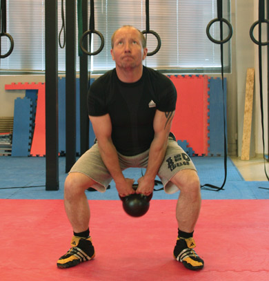

Hva er Fitness?
Hva er den optimale fysikken?
Er det kroppsbyggeren med størst
mulig muskler, eller er det de elegante sprinterne
eller høydehopperne? Hva med de allsidige
tikjemperne eller triatletene? Mange vil
nok hevde at verdens
beste triatleter er verdens best trente personer.
Dette er organisasjonen bak CrossFit sterkt
uenig i. For å finne og avgjøre den optimale
fysikken bruker de tre ulike standarder.
Den første går på de 10 kjente fysiske egenskaper:
oksygentilgang/-opptak, energitilgang/-opptak,
styrke, fleksibilitet, kraft, koordinasjon,
reaksjon, balanse, presisjon og fart.

Optimal fysikk
- Spis kjøtt og vegetabilier, nøtter og
frø, litt frukt og stivelse, men ikke noe
sukker. Hold inntaket på et nivå som
gir god trening, men ikke overflødig
kroppsfett. - Tren de tunge løfteøvelsene:
markløft, knebøy, frivending, skulderpress, rykk og støt, men også gymnastikkøvelsene opphev til hake, dips, tauklatring, armhevinger, situps, press til handstående, piruetter og splitthopp. - Sykling, løping, svømming, roing,
etc, skal gjennomføres som intensiv
intervalltrening. - Tren 5-6 dager i uka der man mikser
disse elementene i så mange kombinasjoner som mulig. Rutine er fienden. - Hold treningene korte og intense. Lær
og gjennomfør jevnlig nye idretter.
Oppnå Fitness
Det å være fit i CrossFits forstand henger i høy grad sammen med fysisk velvære. Hvis vi definerer fysisk velvære ut I fra fysiske kriterier som: blodtryk, fettprocent, muskelmasse, god/dårlig kolesterol, et sterkt immunsforsvar m.m, vil Crossfit hjelpe til å drive alle disse kriterier i en positiv retning.
10 kriterier for Fitness
- 1. Oksygentilgang/-opptak
- Muligheten for kroppen for å
samle, behandle og levere oksygen. - 2. Energitilgang/-opptak
- Muligheten for kroppens systemer
å behandle, levere, lagre og utnytte energi. - 3. Styrke
- Muligheten for en muskel
enhet, eller kombinasjon av muskel-enheter, å bruke makt. - 4. Fleksibilitet
- muligheten til å maksimere rekken av bevegelse til et gitt punkt. - 5. Kraft
- Muligheten for en muskel
enhet, eller kombinasjon av muskel-enheter, å bruke maksimal styrke på minimal tid. - 6. Hastighet
- Muligheten til å minimere
tidssyklus av en gjentatt bevegelse. - 7. Koordinasjon
- Muligheten til å kombinere
flere konkrete bevegelses mønstre til en tydelig bevegelse. - 8. Reaksjon
- Muligheten til å minimere
overgangen fra et bevegelses mønster til et annet. - 9. Balanse
- Muligheten til å justere kroppen segmenter mot tyngdekraften ved å opprettholde eller flytte kroppen. - 10. Presisjon og fart
- Evnen til å kontrollere bevegelse i en bestemt retning eller ved en gitt intensitet.